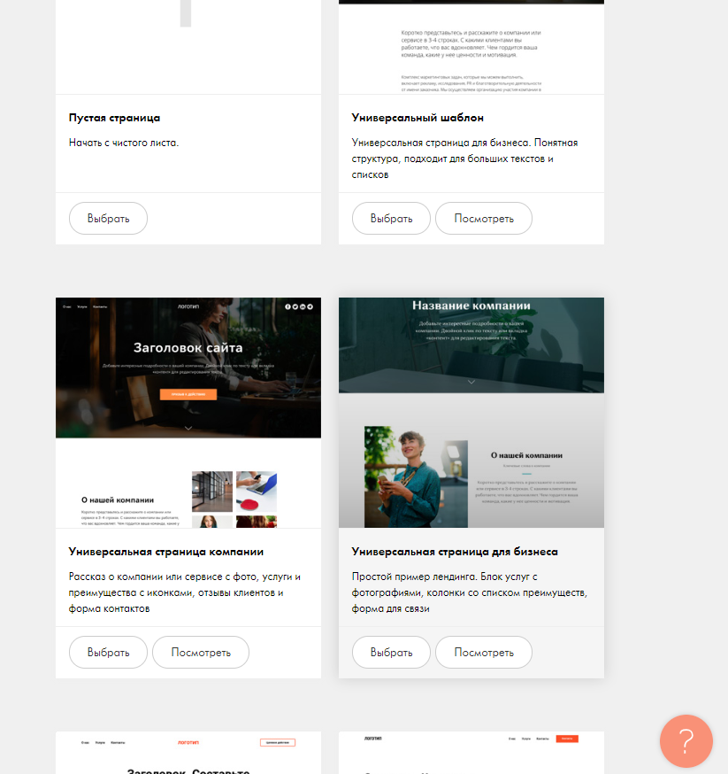

Paragrah1 : Собственно про контент
До появления курса и записи на него, я не занимался веб-программированием. Поэтому в голове это выглядит так, веб-программист тот кто пишет сайтики или веб-приложения и наверное это связано с js-ом.
Хотелось бы понять правильное у меня представление о вебе или нет (получить достаточно информации о чем это),
и сделать вывод хочу я этим в дальнейшем заниматься или не особо, просто верстать сайты это прикольно, но тут хотя бы понимание дизайна нужно,
так что непонятно надо за это браться или нет.
И если все-таки захочется, получить достаточно информации, чтобы пройти собес и получить работу.
А еще интересно, насколько вообще полезно этим заниматься сейчас, когда есть всякие сервисы,
которые помогают набросать лендинги или визитки(тем более бесплатно или по незлобному тарифу), используя, простой понятный интерфейсне связанный с прогой примерно никак.
Это наверное все если говорить о содержании курса.
Pargraph2 : Люди с избытком времени
Помимо этого хочется как-то поменять способ взаимодействия, потому что в силу особенности некоторых людей с курса,
беседы в тг без админских прав превращаются в флудильню, откуда достать информацию крайне затруднительно.
У меня лично был случай, когда пару отменили, после чего был флуд в 200+ сообщений, в итоге я приезжаю в универ и понимаю, что пары нет.
Или в конце концов найти компромисс ( как это делалось на других предметах) создать 1 канал с объявлениями
и один отдать на откуп мерзким флудерам «общительным» людям. 
Paragraph3 : Как закрывать то?
Хочется заранее понять условия закрываемости предмета, потому что интересное содержание интересным содержанием,
но в конце все равно нужно закрывать предмет, поэтому хочется предельной прозрачности условий.
Кроме того хотя бы на раннем этапе, если это возможно какую-нибудь интерактивную обучалку с маленькими показательными заданиями,
чтобы проще было вливаться в курс, а не задание из серии вот тебе две три, десять недель, огромный срок, и сделай вот такой проект.
Просто самообучение это классно, но какой тогда смысл ходить в универ и не сидеть дома, если всякие сайты с полезными материалами и там посмотреть можно,
поэтому маленькие емкие задания с разбором, почему так а не иначе, кажутся более осмысленными.
Еще одним хорошим вариантом мне видится, взять тот же большой проект, и разбить его на маленькие задачи, чтобы было наглядно как структурно выглядит разработка какого-то приложения или сервиса.